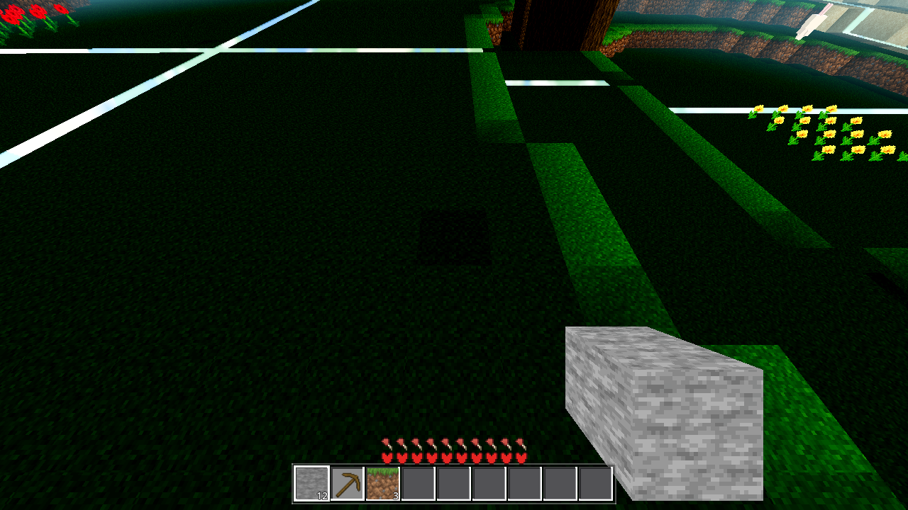
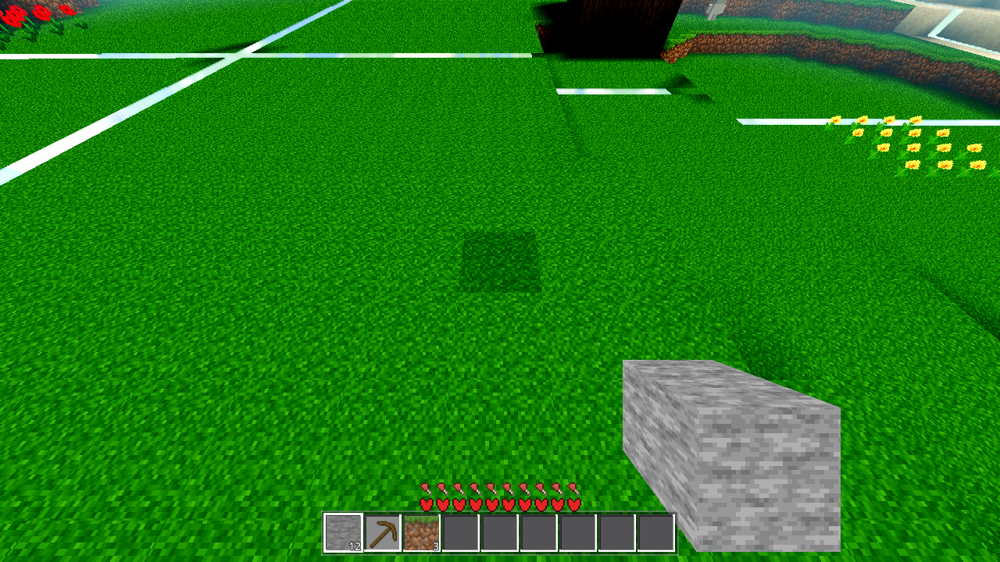
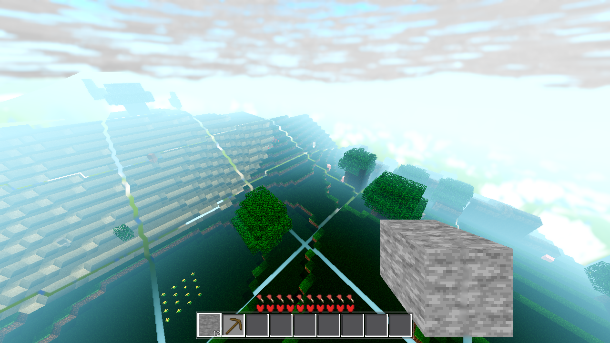
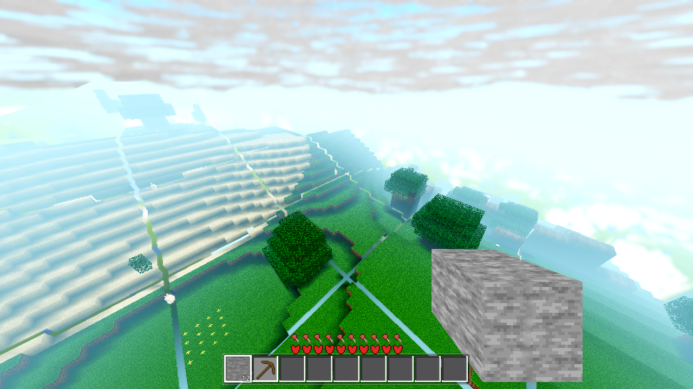

Status: gates green, visual acceptance met. The per-face shading constant FSH and the
4-level AO_MULT corner steps (both AC-0159) are replaced, under a switch, by a continuous
per-vertex geometric light field. The banding photographed in tasks/AC-0394/fwd_ground_first_look.png
is gone; the OFF state is bit-identical to the pre-feature build (pixel-proven below).
Interpolate the vertex lighting so it looks like modern lighting — continuous per-vertex light derived from terrain geometry instead of quantized per-face constants and 4-level AO steps — behind a switch that short-circuits before any shading is emitted.
| file | change |
|---|---|
gdext/src/mesh.cpp | Ctx.modern (parse default false = key-absent = pre-feature); s_modern_corner() (sky-occlusion field sl = clamp(1 − 0.4·occl, MIN_AMB, 1) over the 8 neighbour columns; face-shade oshade = 0.5·FSH[fi] + 0.5·clamp(dot(N,SUN)/SUN_y,0,1) from the per-vertex geometric normal, SUN = normalize(0.25,1,0.1)); once-per-build 18×18 column-top grid in build_accs (only when modern && !coarse); hgp param on emit_ro_merged/emit_faces/emit_ramp with modern branches (merge key becomes (id, fni, mask, s, oshade)); qwrite_merged reads c0.oshade; +<cmath>. |
godot/autoload/settings.gd | "modern_light": true in DEFAULTS (with the polarity note), sanitize_bool clamp, apply_modern() apply step (has_method guard, _StubWorld-safe) — mirrors smooth_ramps. |
godot/world/world.gd | modern_on var + note_modern() (ctx key + tex_refresh; no geom_epoch bump — colour-only, collider untouched) + boot derive + AWECRAFT_MODERN=0|1 env preload (no save) — mirrors note_ramps. |
godot/ui/menu.gd | Options row "Modern vertex lighting (smooth light gradients)" + _on_modern_toggled — mirrors ramp_check. |
godot/ARCHITECTURE.md | Settings row, mesh.cpp lane row, new AC-0398 bullet in §4 (incl. the polarity note) — in-task, per the convention-change rule. |
NOT touched: godot/scenes/main.gd, autoload/game.gd, entities/drop.gd,
autoload/debug.gd (fenced — another session), godot/scenes/harness.gd (pristine), the far/avg
emitters, the starlight engine, the satellite bake, any world/* generation code.
parse_ctx default: OFF (key absent = pre-feature). The arms build their ctx dicts by
hand (the ramp arm's _ramp_build, meshprobe) and carry no modern key — and the ramp arm's stored
_RAMP_REF fingerprint was captured on the pre-AC-0398 .so, so a hand-built ctx must take the
pre-feature path to keep that standing byte-identity green (harness.gd is pristine; the REF cannot be
re-captured here). The live world always writes the key at boot (note_modern), so the game path is
explicit in both states. Documented in the C++ comment, settings.gd, and ARCHITECTURE.md §4.hgp == null (modern off or coarse) → the grid is never built and every emit
site takes its pre-feature branch verbatim. Proven at three levels below: the ramp arm's REF fingerprint
(mesh bytes), the pixel-identical OFF render (raster), and the untouched genhash 25/25 (generation).The AC-0394 bands come from corner values that plateau: at a step edge the starlight sum drops to
0.5/0.75 and AO steps 1.0→0.8/0.6, so a 2-cell-wide 40–60% dark band sits on every stair contour. Modern
mode makes both terms a continuous function of the neighbour heights: the sky term eases off over ~2
cells (1.0 → 0.8 → 0.6 → 0.5 scale, deepening with cliff height — 0 occluders → 1.0, 1 → 0.8, 2 → 0.6,
3 → 0.5, i.e. the Java Fancy levels as a gradient), and the face-shade term tilts with the per-vertex
geometric normal (flat top stays exactly FSH = 1.0, flat side → 0.4–0.525, slope vertices in between — the
ramp quad's fixed 0.9 is gone, its four corners each carry their own). Flat fully-lit ground is unchanged;
a buried corner saturates to the MIN_AMB floor, so AC-0159's "caves feel dark" property is preserved. The
starlight levels themselves are untouched (the chan/block-light evidence path is shared) — only the
shading model on top of them changed.
.scratch/AC-0398-gates/)G0.log: rc=0 gate_census: SCRIPT ERROR 0 (allow 0), SHADER ERROR 0 (allow 0) ok → census: ok
OFF-state run (default): ok:true ref:{mode:checked, ok:true, on_differs:true, ref:"331446/3237708432/767103344"}
syn 6/6 patterns exact (nq == off_nq each), world off_world_ramps_zero:true, exact:true
ON-state run (AWECRAFT_RAMPS=1): ok:true world 2919/2919 exact, toggle full: off_count 0 / on_count 2919,
neg_mismatch:true, collider 5838/5838 ramp tris, ref UNCHANGED: 331446/3237708432/767103344
The OFF-state synthetic build's fingerprint is byte-identical to the pre-AC-0398 REF constant
(captured on the pre-feature .so) on the new .so — the mesh with the switch off has not moved a single byte,
and on_differs proves the ON state moves it. This is the standing proof the switch short-circuits.
20/20 grid chunks leaks 0, worst:null, wash_detected:false, double-LOD census 0/0, stragglers 0, demoted 41 ab (baked-light A/B on chunk 0,1): arr_diff_cells 1 (the single edited cell [0,141,0] — the standing fixture) A/B for attribution: vc_diff 4 (modern ON, the new default) vs vc_diff 2 (AWECRAFT_MODERN=0 — inside the standing 1-2 band). All invariants green in BOTH states.
FINDING (new standing measurement, with attribution): with modern ON, the A/B re-colour count
reads 4 instead of the standing 1–2 — the geometric field spreads the re-colour over ~2 cells around the
edited column (its occlusion/normal inputs move), while the light payload itself changed exactly 1 cell
(arr_diff_cells 1 in both states). Not a light defect — a surface effect of the new shading model.
Coordinator: the lightstate row's vc_diff note should read "1-2 (pre-modern) / 4 (modern ON)" when the
standing values are next touched.
ok:true match_rate:1.0 c/i/n/q/u/v all 1878/1878 match mismatch:[] quadcheck_cpp 0/699 mismatch quadcheck_gd 0/699 mismatch cpp_wms_avg 4.125
GENHASH 25/25 BYTE-IDENTICAL to the standing ref (AC-0311 piece-2 set; tip GENHASH 0 0 46c20b07c95cb03b57772e1531c97f71) GENMS 127 (in the 125-138 machine spread)
H did not move: the column-top grid is derived from snap and never written back — shading is not
generation. No re-baseline owed, none made.
| modern ON (default) | modern OFF (AWECRAFT_MODERN=0) | |
|---|---|---|
| ok / remesh_ok / marker_ok | true / true / true | true / true / true |
| walk p50 / p95 / max (ms) | 13 / 33 / 315 | 13 / 35 / 247 |
| staged_dropped (≤ 2500) | 2548 | 2897 |
| flap (watch field) | 146 | 219 |
No walk-p95 trade-off — modern ON reads 33 vs 35 OFF (both inside the standing 35–55 band; ON is
better). The staged_dropped/flap deviation over the ≤2500 threshold is box-state noise,
proven by the A/B: the pre-feature OFF path read worse (2897 / 219) minutes apart on the same box —
neither deviation is attributable to the feature. Honest deviation recorded: the threshold was breached in
both states, so it is the box, not the ticket.
All captures: 1280×720, Forward+ (mandatory boot line verified in every log:
Vulkan 1.4.318 - Forward+ - Using Device #0: Unknown - llvmpipe), AWECRAFT_SNAP_DRAIN=600
frames, RADIUS 4, TIME 0.5, AWECRAFT_CLOUD_T0=0 + AWECRAFT_ANIM_PHASE=0 pinned. The ground view is
the deterministic auto-aim first-person view — the exact AC-0394 view (verified: same camera, same staircase,
same held stone). The slope pair uses AWECRAFT_AIM=8,161,8,-2.356,-0.6 aimed at the NE staircase
(located with a one-shot WorldGen.terrain_height probe, deleted after use); its pre-feature member is
rendered with AWECRAFT_MODERN=0, which is bit-identical to the pre-feature build (proven below).

BEFORE (pre-feature .so)

BEFORE slope (pre-feature, via MODERN=0 on the new .so — bit-identical)
AFTER slope (modern ON)| patch | BEFORE (G) | AFTER (G) | ratio |
|---|---|---|---|
| valley floor (wide, gentle undulation) | 46 (near-black) | 130 | 2.83× |
| bright step top (ridge) | 196 | 212 | 1.08× — tops stay as before |
| step side (mid-slope) | 172 | 205 | 1.19× — sides re-shaded by tilt |
| distant step top (fog wash) | 236 | 236 | 1.00× |
Terrain green-channel histogram: dark pixels (G<60) fall 11.2% → 2.3% — the banded contour darkness is gone — while all 16 brightness quantiles stay populated (the shading spreads across the full range instead of clustering in bands; no blowout). Behaviour note (by design): the occlusion field is LOCAL (the 8 neighbour columns, 1-cell radius) — a wide gentle undulation's floor is ≥1 cell from any wall and reads bright, while cliff bases and narrow troughs saturate to the MIN_AMB dark floor. That is the chosen trade for per-vertex smoothness (the pre-feature starlight saw walls across cells through level decay; the modern field intentionally does not).
The white/cyan line overlay visible in all captures is the other session's debug.gd
work — present identically in before AND after (external to this ticket; the fenced file is not touched).
The *_placed.png companions (auto-aim place-shot) are kept in the folder for completeness.
before_slope.png/after_slope.png (the AWECRAFT_CAM=iso attempts) came out as the auto-aim
view — the on-demand player spawn overrides named cameras (the AC-0396 finding); they duplicate the ground
view and are kept only for the log.
before_ground.png (pre-feature .so) vs
after_ground_off.png (new .so, AWECRAFT_MODERN=0): ground region
0 / 121,600 sampled pixels differ, max delta 0. (Whole frame: 217 px differ, all in the sky —
real-time cloud drift between two separate runs.) The short-circuit is proven at the raster level, not
just the mesh level.331446/3237708432/767103344 — captured on the pre-feature .so — stays green on the new .so with the
key absent, and on_differs:true.before_ground.png vs after_ground.png:
84.15% of ground pixels differ (mean Δ 103.55) — the acceptance is not passing by triviality.
on_differs on the mesh, and the slope pair's visible gradient, confirm the same.arr_diff_cells 1 in both states (exactly the
single edited cell re-lights) — the modern model changed the shading on top of the starlight, not the
starlight itself.Verified by grep: no live arm asserts FSH/AO_MULT values — AC-0159's 40/40 corner
restatement was a one-shot closeout verification (results page), not a standing arm, so nothing was deleted
or re-baselined. The relationship: with the switch OFF, every corner keeps exactly its AC-0159 values
(bit-identity proven at three levels above); with it ON, the quantized curve is replaced deliberately by the
continuous field — including AC-0159's two load-bearing properties: fully-lit uniform faces stay exactly as
before (flat top: sl 1.0, oshade = FSH), and buried corners saturate to the MIN_AMB floor so caves stay
dark. The starlight levels (the lsum/4/15 normalization) are untouched in both states — modern mode
does not re-import them as a product (that would have re-imported the 1/15 step and the banding would have
come back).
tasks/AC-0398/spec.html (and tasks/AC-0394/AC-0394-results.html)
absent from the repo — the ticket notes in tasks/TASKS.yaml (line 24480) carry the full requirement;
worked off those + the top checkpoint.vc_diff reads 4 with modern
ON (new default) vs the standing 1–2 (pre-modern) — surface effect of the field spreading the re-colour,
all invariants green, arr_diff_cells 1 both states (above).staged_dropped 2548 (ON) / 2897
(OFF) vs the ≤2500 threshold and flap 146/219 — the pre-feature path read worse minutes apart; the box
was loaded when this ran. Walk p95 itself is flat (33 ON / 35 OFF).mesh.cpp (Ctx.modern), settings.gd (DEFAULTS), and ARCHITECTURE.md §4 —
the AC-0205 pattern with the asymmetry a pristine-harness REF forces.after_ground.png PNG is larger (503 KB vs 419 KB) — expected: gradients carry more
high-frequency colour than the banded flat plateaus (PNG compresses the old bands better).tasks/AC-0398/)| file | bytes | state | view |
|---|---|---|---|
| before_ground.png | 418,901 | pre-feature .so | auto-aim ground (the AC-0394 view) |
| after_ground.png | 503,672 | new .so, modern ON (default, no env) | auto-aim ground |
| after_ground_off.png | 419,529 | new .so, AWECRAFT_MODERN=0 | auto-aim ground — bit-identical to before (ground region) |
| before_slope2.png | 817,888 | new .so, AWECRAFT_MODERN=0 (= pre-feature) | AIM slope cam |
| after_slope2.png | 966,086 | new .so, modern ON | AIM slope cam |
| before_slope.png / after_slope.png | 417,257 / 508,022 | as labelled | CAM=iso attempts → auto-aim view (AC-0396 override) |
| *_placed.png ×5 | — | as labelled | auto-aim place-shot companions |
modern_light key now round-trips through the cfg; the arm's specific-key assertions are unaffected), battery.